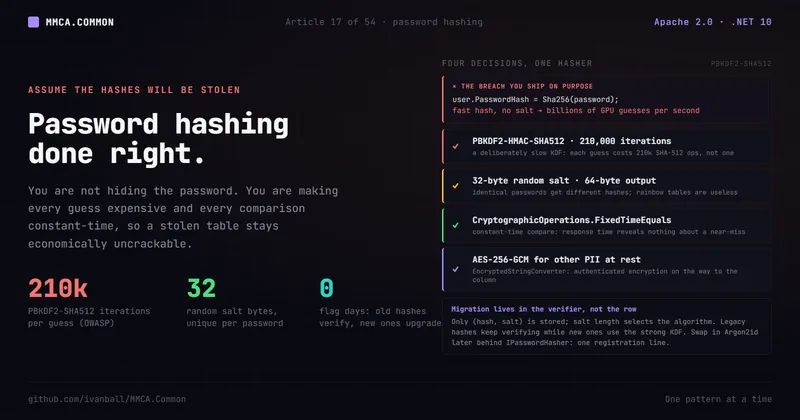

Auth & the edge · No. 17
Password hashing done right: PBKDF2-SHA512, a versioned work factor, timing-safe

Storing a password is a solved problem, and almost every breach headline is someone who solved it the wrong way. Here are the four decisions that separate a hash you can defend from one that leaks every account the day your database does.
The single most damaging line of code in a lot of .NET apps is shorter than this sentence:
user.PasswordHash = Sha256(password); // looks responsible. is not.It looks responsible. It is not a plaintext password, after all. But SHA-256 is a fast hash, designed
to digest gigabytes per second, and that speed is exactly the problem. The day your Users table
leaks, an attacker with a commodity GPU runs billions of those hashes per second against a wordlist and
recovers most of your users' passwords before lunch. No salt means identical passwords share a hash, so
they only have to crack each distinct password once. You did not store plaintext, but you stored
something an attacker turns into plaintext at scale.
Password storage is a solved problem. The breach headlines are almost always someone who solved it the wrong way: a fast hash, no salt, a hand-rolled comparison, or a homegrown scheme that "looked secure."
Why it matters
A leaked password table is not just a breach of your app. People reuse passwords. The credentials you fail to protect become the keys an attacker tries against their bank, their email, their employer. The threat model for a password hash is not "keep it secret" (you cannot, your database will eventually be read by someone it should not be). The threat model is: assume the hashes are stolen, and make recovering the original passwords economically infeasible anyway.
That reframes the whole job. You are not hiding the password. You are making each guess expensive enough that brute force does not pay, and making the storage shape leak nothing extra (not which passwords are identical, not how many bytes of a guess were right).
The MMCA answer: a deliberately slow KDF, salted, compared in constant time
MMCA.Common ships one production password hasher, split the Clean-Architecture way: the
IPasswordHasher port sits in MMCA.Common.Application and its single PasswordHasher
implementation in MMCA.Common.Infrastructure. It makes the right call on every axis:
- PBKDF2-HMAC-SHA512 at 210,000 iterations for every new hash. The hasher's own documentation gives 210,000 as the OWASP Password Storage Cheat Sheet figure for PBKDF2-HMAC-SHA512 (600,000 is the cheat sheet's figure for PBKDF2-HMAC-SHA256). PBKDF2 is a key derivation function: a deliberately expensive hash. Two hundred ten thousand iterations means each guess against a new hash costs the attacker 210,000 HMAC-SHA512 operations, not one. That turns "billions of guesses per second" into a rate where offline brute force against a strong password stops being worth the electricity.
- A 32-byte cryptographically random salt per password, and a hash that records its own work
factor. The PBKDF2 digest is 64 bytes, and the stored hash is 69: a
0x01version byte, the iteration count as a 4-byte big-endian integer, then the digest. The salt means two users with the same password get different hashes, so an attacker cannot crack once and apply everywhere, and precomputed rainbow tables are useless. - Constant-time comparison. Verification ends with
CryptographicOperations.FixedTimeEquals, which always compares the full length regardless of where the first mismatch is.
// HashPassword: 32-byte random salt, PBKDF2-HMAC-SHA512 at 210,000 iterations, and a 69-byte hash
// laid out as [0x01 version][4-byte big-endian iterations][64-byte digest].
(byte[] Hash, byte[] Salt) HashPassword(string password);
// VerifyPassword derives at the count the stored hash carries, then compares the trailing
// 64 bytes with a timing-safe compare, never a == or SequenceEqual:
var expected = hash.AsSpan(hash.Length - HashSize);
return CryptographicOperations.FixedTimeEquals(computedHash, expected);
// NeedsRehash: true when a hash that just verified is in an older format or carries another count.
bool NeedsRehash(byte[] hash);(Source: PasswordHasher.cs and the password section of 8. Authentication & Authorization.)
Those parameters are not a convention held in place by code review. They are build-failing checks.
Known-answer tests recompute the digest independently with PBKDF2-HMAC-SHA512 and a 64-byte output:
at 210,000 iterations for a new hash, whose version byte and stored count they check byte by byte, and
at 600,000 for a header-less legacy hash, so a lowered work factor, a swapped algorithm or a truncated
digest stops matching. One test stores a count of 300,000 and asserts it verifies and is reported for
rehash, and a bounds theory rejects stored counts of 99,999, 2,000,001, 0 and -1 and version bytes
0x00 and 0x02. A negative known-answer test derives a header-less digest at 100,000 iterations and
asserts verification rejects it, which proves the work factor really participates rather than sitting
in a comment. Reflection reads four private constants straight off the type and pins them (the
210,000 current count, the 600,000 legacy count, the 32-byte salt and the 64-byte digest), so lowering
one fails the build instead of silently shipping. And an architecture rule reads the compiled type and fails the build if it stops
depending on Rfc2898DeriveBytes (the slow key derivation function) or on CryptographicOperations
(the class that holds the fixed-time comparison), so a rewrite that swapped PBKDF2 for a raw SHA-512
cannot merge even if it kept the same output length. That second rule pins the class, not the method:
FixedTimeEquals is the hasher's only use of CryptographicOperations, so swapping it for
SequenceEqual fails the build, but a rewrite that kept some other call on that class would not.
Why constant-time matters more than it looks
The naive comparison computed == stored returns as soon as it finds the first differing byte. That
is a timing side channel: an attacker who can measure response time learns how many leading bytes
matched, and can recover a secret byte by byte, turning an astronomically large search into a linear
one. FixedTimeEquals always touches the full length, so the time it takes reveals nothing about how
close a guess was. You never write your own equality check on secret material. The BCL has the
timing-safe primitive precisely so you do not have to.
One algorithm, two stored shapes, and a guard on the material
The hasher stores (byte[] Hash, byte[] Salt), and the hash carries its own work factor. A 69-byte
hash opens with the version byte and the iteration count it was derived with. A bare 64-byte hash is
the legacy header-less format, which the verifier reads as 600,000 iterations. Only the algorithm lives
in code: PBKDF2-HMAC-SHA512 is the only supported algorithm, so nothing about a stored row selects a
primitive. Verification opens by accepting exactly the two shapes this hasher writes, a 32-byte salt
with either a 64-byte legacy hash or a 69-byte hash whose version byte is 0x01 and whose count lies
between 100,000 and 2,000,000 inclusive, and rejects everything else. It then derives at that count and
compares against the trailing 64 bytes. The bounds are part of the guard: the floor stops a tampered row
from lowering the cost of guessing its password, and the ceiling caps the work one verification can be
made to do, so a tampered row cannot turn a sign-in into a CPU denial of service. The shape check is the
interesting part. A hasher that takes its output length from the stored hash turns a row holding an
empty hash and an empty salt (the shape an external-OAuth account carries, ADR-036) into an empty
derivation compared against an empty span, which a fixed-time comparison answers true for, so any
password authenticates it. This one always derives a 64-byte digest and checks the material's shape
before it slices the stored hash, and the login path screens out an account with no stored credential
before it ever calls the verifier. Material this hasher never produced verifies nothing.
Two stored shapes is a deliberate trade, and the explicit version marker is what keeps it safe. A
verifier that picks its behavior from an implicit data property (the stored salt length, say) lets the
credential table decide what runs, with no way to tell which path a given login took. Here each shape
says what it is: a header-less 64-byte hash is the legacy format at 600,000 iterations, and a versioned
hash states its version and its count, bounded at both ends. Both run the same PBKDF2-HMAC-SHA512
primitive, so the format changes the cost, never the algorithm, and a credential in any third shape
fails rather than authenticating. In apps that opt in, old records leave the legacy shape on their
owner's next sign-in.
After the tokens are issued, AuthenticationServiceBase asks IPasswordHasher.NeedsRehash whether the
hash that just verified is the legacy shape or carries a count other than the current one; if so, it
re-derives the hash from the plaintext in hand and saves it on its own, best effort, so a failed save
never fails a sign-in that already succeeded. That upgrade is opt-in per application: it runs only when
the app's User implements IPasswordRehashableUser, whose RehashPassword stays apart from
ChangePassword so a rehash raises no password-changed event. ADC and Store opt in; Helpdesk holds no
password material. In an app that does not opt in, legacy records keep verifying at 600,000 and are
never upgraded. NeedsRehash is a default interface member answering false, so a custom hasher
compiles unchanged and never triggers a rehash. Changing the algorithm itself stays cheap because it
sits behind IPasswordHasher: the registration is a single Infrastructure line, and the application
handlers never name a password-hashing primitive.
The login path's timing defense goes through the same interface. To keep an unknown address from answering faster than a wrong password, it hashes the submitted password once and discards the result, so that throwaway call costs whatever the registered hasher costs and follows any replacement without a matching change. That burn costs the current work factor, though. A wrong password against a record still on an older factor (a legacy 600,000-iteration hash) costs that older amount, so until the record is rehashed, an unknown address answers faster than a wrong password against it. Rehash-on-login closes that gap one sign-in at a time, and only in an app that opts in.
Defense in depth: PII at rest, not just passwords
Passwords are the famous case, but they are not the only personal data sitting in your database.
MMCA.Common ships field-level PII encryption as a separate control, recorded in its own decision
record (ADR-037): EncryptedStringConverter is an EF Core value converter that encrypts a column with
AES-256-GCM transparently on the way to the database and decrypts on the way out. GCM is
authenticated encryption, so it protects confidentiality and detects tampering. It is the framework
capability the erasure design (ADR-005) provides for fields a service chooses to keep retrievable for
legitimate use after anonymization, encrypted at rest rather than overwritten. (It is a shipped,
unit-tested converter that only test harnesses map and no production entity configuration in any of
the four repositories wires, so zero production columns are encrypted; the consumer apps overwrite every PII field on anonymization.
ADR-037 records the extension point and is explicit about that latent posture.)
The whole pipeline is held to the same enforcement bar as the rest of the framework: all five
analyzers run at error severity with TreatWarningsAsErrors globally, and a couple of them
(SonarAnalyzer and Meziantou) carry security-relevant rules. The security category (§11) scored
Maturity 4 / Implementation 8 on the framework's two-axis rubric (Maturity 0-4, Implementation
0-10), on the strength of JWT algorithm pinning, the PBKDF2 password hasher,
permission-based server-side authorization, and rate limiting (brute-force protection applies
exponential-backoff lockouts and clears the counter on success). The field-encryption converter is not
part of that credit: the scorecard entry lists it as shipped but latent.
Trade-offs, honestly
A credible security post owns its rough edges, and a few sit around this hash rather than in it.
- Plain-HTTP metadata discovery is an opt-out, not a default.
AddForwardedJwtBearerresolvesRequireHttpsMetadatafrom an explicit argument, then anAuthentication:JwtBearer:RequireHttpsMetadataconfig key, thentrueeverywhere except Development, and logs one startup warning when a deployment opts back out (both production apps do, because their authority is an internal-ingress cleartext URL, and their deployment templates say so beside the setting). Permissive dev CORS is a development affordance in the code, not a recommendation for what you run in production. - Iteration counts are a moving target. New hashes use 210,000 PBKDF2-SHA512 iterations, the
figure the hasher documents as OWASP's for that primitive, and that guidance ratchets up with
hardware. Here it is a private constant pinned by a test, not a setting. Because each hash stores its
own count, raising the constant re-derives records on their next sign-in rather than locking them
out, but only where the
Useropts in throughIPasswordRehashableUser; elsewhere a record keeps verifying at the count it was written with. A new count outside the accepted 100,000 to 2,000,000 window also needs the bounds moved, or the hashes it writes would verify nothing. Revisit it anyway, and prefer a memory-hard KDF (Argon2id) when you can, which is exactly why the algorithm lives behind an interface here.
The current §11 entry itself names three reasons it holds at Implementation 8: the rubric's threat-model criterion is unmet, authorization is RBAC with a capability layer plus opt-in ownership checks rather than a full resource- or attribute-based policy engine, and the failed-login counter behind the brute-force lockout is documented as non-atomic. It also records that service-to-service trust is met only in part: a broker consumer restores user identity and tenant from unsigned message headers, in-cluster gRPC forwards the user token over cleartext HTTP/2, and the opt-in service token beside it is HS256 over one key every service shares (only Store adopts it). Tenant resolution defaults to the signed claim, with a request header as an explicit opt-in. All of it sits upstream of the hash, and none of it undermines the storage scheme. They are the operational and governance work that surrounds a correct hash.
Apply this even without MMCA
The rules port to any stack, and they are short enough to memorize:
- Never store plaintext, and never use a fast hash (MD5, SHA-1, plain SHA-256/512) for passwords. Use a purpose-built KDF: Argon2id if available, otherwise PBKDF2-HMAC-SHA512 or bcrypt/scrypt.
- Tune the work factor to current guidance (the OWASP Password Storage Cheat Sheet publishes a figure per hash function; this hasher derives new hashes at 210,000 PBKDF2-SHA512 iterations), store the count with each hash so you can raise it without locking anyone out, and revisit it as hardware improves.
- Salt every password with a per-user cryptographically random value. The salt does not need to be secret; it needs to be unique.
- Compare in constant time. Use your platform's timing-safe primitive
(
CryptographicOperations.FixedTimeEqualsin .NET), never==or a default sequence equality on secret bytes. - Never roll your own crypto. Lean on the BCL/library primitives, and put the algorithm behind an interface so you can migrate without a flag day.
- Encrypt other PII at rest with authenticated encryption (AES-256-GCM), and keep your analyzers
at error severity so a careless
==on a secret never merges.
The takeaway: assume the hashes will be stolen, and make every guess expensive and every comparison constant-time anyway. Everything else is detail.
What we covered: why a fast unsalted hash is the breach you ship on purpose, how PBKDF2-SHA512 at
210,000 iterations with a per-password salt and a FixedTimeEquals compare makes stolen hashes
uneconomical to crack, how known-answer tests and an architecture rule keep those parameters
build-failing invariants, why one PBKDF2 primitive over two explicitly marked shapes plus a
canonical-material guard means a credential row in any other shape authenticates nobody, how
rehash-on-login moves legacy records to the current work factor in the apps that opt in, how
AES-256-GCM field encryption via EncryptedStringConverter extends the same care to other PII, and the
honest trade-offs (the HTTPS-metadata opt-out, an iteration count that ratchets with hardware, and an
unknown-address burn that costs the current factor).
Next in the series: idempotency in one attribute, so a client that retries a write gets the first response replayed instead of a duplicate.
MMCA.Common is Apache-2.0 licensed and open source. Star the repo, read the §11 scorecard entry, or
dotnet add package MMCA.Common.Infrastructure and try it.
- ⭐ Repo: https://github.com/ivanball/MMCA.Common
- 📄 The §11 security entry lives in MMCA.Common: Architecture Scorecard in the docs site.
Tags: .NET, C Sharp, Software Architecture, Security, Cryptography